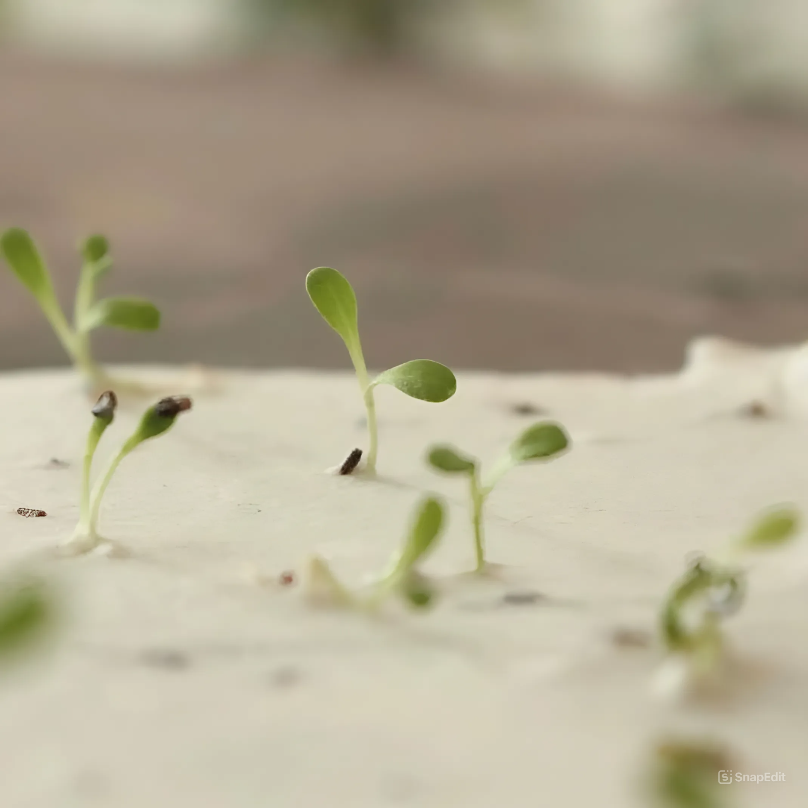
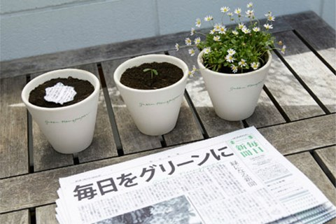

Climate change, driven by greenhouse gases, leads to higher temperatures, altered weather cycles, extreme weather, and more frequent fires.
NEWS Updates
02 Jun 2024

 Hoang Tran
Read More
Hoang Tran
Read More
24 May,2024
136 COMMENTS
Sprouting Paper
Germination Paper is handmade in a garden using recycled paper pulp mixed with flower seeds and aromatic leaves.
Hoang Tran

2 Jun,2024
13 COMMENTS
"Newspaper can help you sow seeds, plants will bloom"
The Japanese newspaper Mainichi Shimbun introduced a recyclable newspaper that can be planted to grow trees.
Hoang Tran

Hoang Tran
Read More
Trees grow from newspaper in Japan
Hoang Tran

2 Jun,2024
206 COMMENTS
Challenges in Vietnam's international environmental commitments.
In 1945, representatives from 50 countries met in San Francisco to draft the United Nations Charter. The UN officially came into existence on 24 October 1945.
Hoang Tran JP